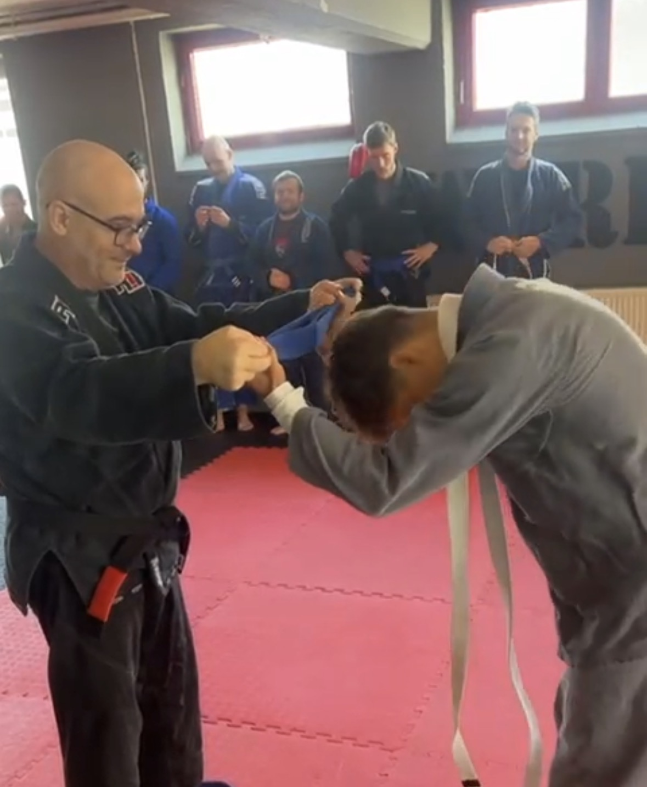

Diese Webseite dient als persönliches Technik-Archiv für Brazilian Jiu-Jitsu und Judo. Der Fokus liegt bewusst auf Funktionalität, Struktur und Wiederholung – nicht auf Design oder Selbstdarstellung.
Brazilian Jiu-Jitsu ist ein positionsbasierter Sport. Ähnlich wie im Schach entscheidet nicht ein einzelner Zug, sondern die Stellung auf dem Brett darüber, welche Optionen sinnvoll oder überhaupt möglich sind. Eine gute Position eröffnet Angriffe, eine schlechte schränkt sie ein.
Genau deshalb sind die Techniken hier nach Positionen getrennt abgelegt. Jede Seite entspricht einer realen Kampfsituation, so wie sie im Training oder Sparring entsteht. Das erleichtert das Lernen, Wiederfinden und gezielte Wiederholen einzelner Abläufe.
Techniken werden als Audio gespeichert, können benannt, kommentiert und getaggt werden. Über die Review-Funktion lassen sich Inhalte sammeln, die aktuell besondere Aufmerksamkeit brauchen – und später wieder aus dem Fokus nehmen, ohne sie zu verlieren.
Graduierung zum Blau-Gurt (2024)